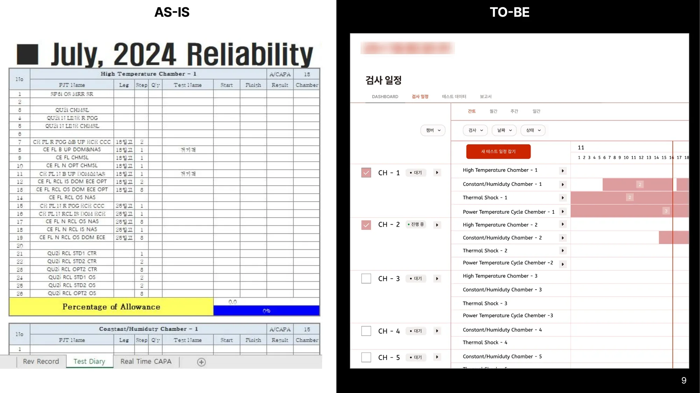

제조 품질관리 시스템
신뢰성 시험 관리 서비스
차량 부품 제조사의 품질 데이터베이스(QDB) 중 신뢰성 시험 영역을 맡았습니다. 엑셀 일정표와 종이 성적서로 흩어져 있던 시험 과정을 일정 파악·예약 → 실시간 데이터 확인 → 결과 확인·자동 보고서의 세 흐름으로 묶었습니다.
챔버별 진행 현황을 한눈에 보는 대시보드, 빈 시간을 골라 바로 예약하는 일정 화면, 온도·습도 데이터를 모니터링하는 화면을 AS-IS/TO-BE로 설계해 실무진 검토를 받았습니다.
